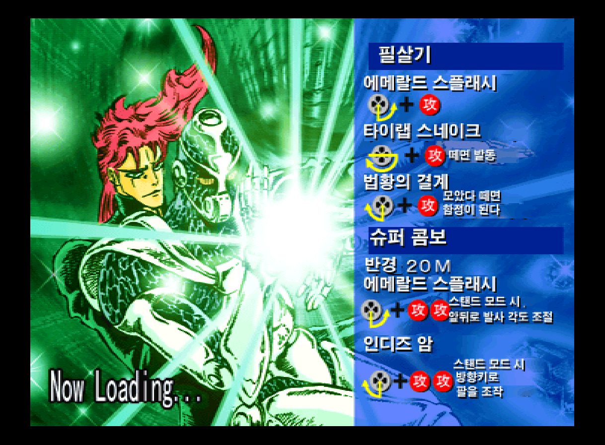
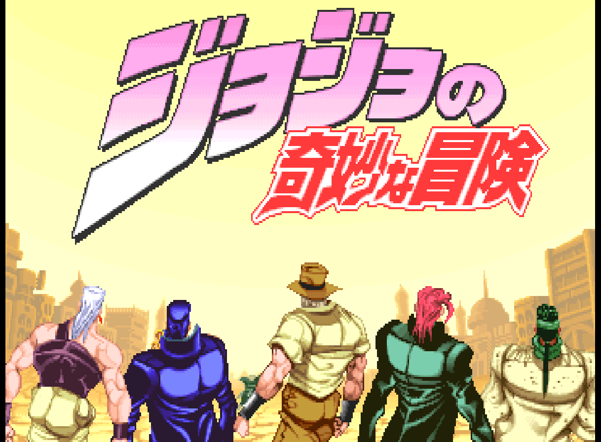
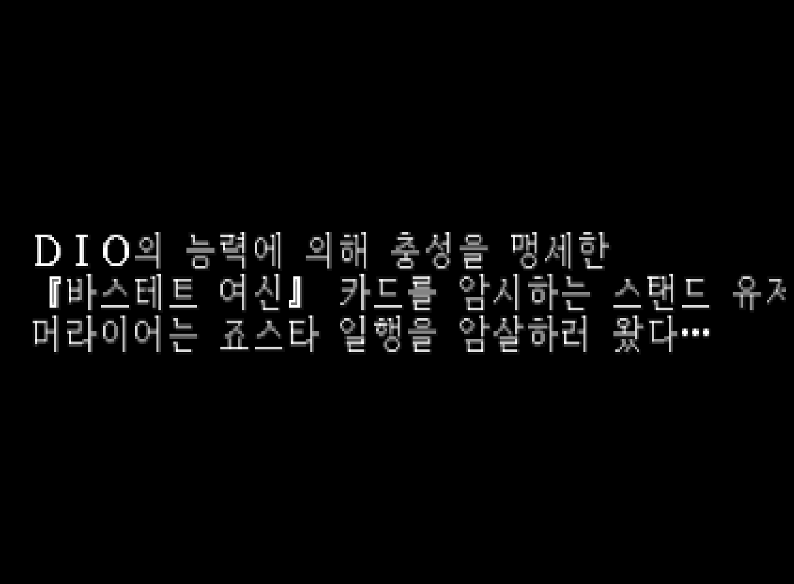

오프닝, 슈퍼 스토리, 아케이드, 점(URANAI), 미니게임 및 시스템 텍스트를 구역별로 분석·번역 중입니다.
PLAYSTATION · KOREAN LOCALIZATION
죠죠의 기묘한 모험
JoJo no Kimyou na Bouken
PLAYSTATION일본판제작 중배포 전 미리보기
《죠죠의 기묘한 모험》 제3부를 바탕으로 한 플레이스테이션용 대전 격투 게임. 스탠드를 이용한 공방에 더해, 원작의 여행을 따라가는 슈퍼 스토리 모드와 다양한 미니게임을 즐길 수 있습니다.
배포 전 · 한국어화·그래픽·편집기 작업 진행 중 제작 현황 확인 ↓
게임 정보
게임명죠죠의 기묘한 모험
플랫폼Sony PlayStation
대상일본판 · SLPS-02236
장르2D 대전 격투·어드벤처
원작 발매일1999.10.14 (일본)
개발·발매CAPCOM
원작 정보: PSX Data Center · 패키지 이미지: 참고 이미지 출처
게임 카탈로그
GAME CATALOGUE · 작품 가이드PLAYSTATION · 1999 · FIGHTING · STORY



원작 소개 · 게임 고유의 시스템
스탠드 격투와 원작의 여정을 담은 슈퍼 스토리
《죠죠의 기묘한 모험》 제3부를 바탕으로 한 플레이스테이션용 대전 격투 게임. 스탠드를 이용한 공방에 더해, 원작의 여행을 따라가는 슈퍼 스토리 모드와 다양한 미니게임을 즐길 수 있습니다.
스탠드와 함께 싸우는 격투캐릭터마다 다른 스탠드의 특성을 활용해 공격과 수비를 전환합니다.
격투만으로 끝나지 않는 이야기슈퍼 스토리에서는 원작 3부의 여정을 다양한 전투·미니게임·이벤트로 풀어냅니다.
화면 자료: 프로젝트 로컬 에뮬레이터 캡처. 원본 참고 화면과 한국어 작업 캡처를 구분해 표기했습니다. 실제 배포본 스크린샷은 추후 교체될 수 있습니다.
한국어화 작업 내용
캐릭터 소개, 로딩 카드, 스토리와 타이틀·메뉴 그래픽의 일본어 및 한국어 글리프 출력 영역을 검수합니다.
원본 일본어와 글리프 출력을 대조하는 편집기, 게임 데이터 소비처 및 폰트 표시 로직을 검증 중입니다.
현재 진행 현황
작업 단계: 한국어화·그래픽·편집기 작업 진행 중
현재 확인: 구역별 원문·번역·그림 자료 및 글리프 출력 검수 진행
검수·제약: 최종 통합 패치의 공개 버전·배포일·전체 구간 게임 검수는 아직 확정되지 않았습니다.
이 페이지는 2026.11.01 기준 공개된 프로젝트 안내용 초기 미리보기입니다. 실제 릴리스·빌드·실기 검수 완료를 의미하지 않습니다.
패치 배포 안내
한글패치 배포 준비 중
현재 공개 가능한 최종 패치 파일이나 다운로드 링크는 등록되지 않았습니다. 사용자 게임 검수와 패키징·배포 승인 이후 이 구역에 버전, 적용 방법, 파일 해시 및 다운로드 링크를 추가합니다.
다운로드 준비 중권리 및 이용 안내
본 페이지는 비상업적인 팬 한국어화 프로젝트의 제작 현황 안내입니다. 게임의 이미지·이름·원작 권리는 각 권리자에게 있습니다. 원본 게임 디스크·이미지·ROM은 제공하지 않으며, 향후 패치가 배포될 때에는 사이트의 파일 이용 및 재배포 안내가 적용됩니다. 이 페이지의 제작 중 설명을 배포 완료 또는 전체 플레이 검수 완료로 해석하지 마세요.